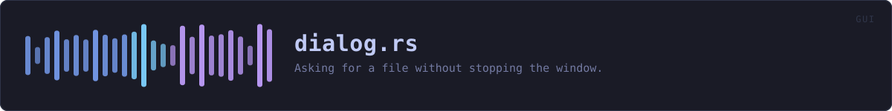

crates/veilvoice-gui/src/dialog.rs
veilvoice-gui · 369 lines · read the source here · or on GitHub
Asking for a file without stopping the window.
The defect this exists to fix
Every file picker in this application was opened with rfd's blocking API, straight from the frame that handled the click:
if ui.button("choose file…").clicked() {
if let Some(path) = rfd::FileDialog::new().pick_file() { … }
}pick_file does not return until the person has chosen a file or cancelled. It is called from inside update, which is the render loop, so for as long as that dialog is open VeilVoice draws nothing at all: the window does not repaint, animations stop, the meters freeze, and dragging it leaves a trail of stale pixels. Somebody browsing for a recording for thirty seconds has a frozen application for thirty seconds.
It is also the answer to "it lags when I select things", which is a real report and an accurate one. There were seven of these.
How this is avoided, and the one platform where it cannot be
The dialog runs on a thread of its own and the answer comes back down a channel, which Pending::poll reads without waiting. update starts the ask and returns immediately; the window keeps painting the whole time.
macOS is the exception, and it is not a shortcut. NSOpenPanel must be driven from the main thread; opening one anywhere else does not work, and on some versions it does not fail politely either. So on macOS the ask is made inline, exactly as before. That platform keeps the old behaviour because the alternative is a picker that does not appear, and a frozen window is better than no dialog.
In plain words
When you click "choose a file", the box that opens used to freeze the rest of VeilVoice until you picked something. Now it opens beside the application and everything carries on running while you browse.
On Apple computers it still waits, because macOS insists that file pickers are opened by the main part of a program and there is no way around that which actually works.
WHAT THIS FILE CONTAINS
369 lines defining 10 functions (9 public), 2 types and 0 constants. Everything below is read out of the source, so it cannot disagree with the code.
The types it owns.
enum Askline 53 — What is being asked for.struct Pendingline 130 — A file dialog that is open, or has just been answered.
What happens when it runs. These are the ways in: public, and nothing else in this file calls them, so they are what an outside caller reaches first.
Ask::openline 72 — An open dialog with no filter.Ask::open_filteredline 77 — An open dialog restricted to these extensions.Ask::saveline 87 — A save dialog offering this name.Ask::save_filteredline 95 — A save dialog offering this name, restricted to these extensions.Pending::newline 136 — Nothing is being asked.Pending::is_openline 145 — Whether a dialog is open right now.Pending::startline 150 — Start asking.Pending::takenline 194 — The answer, if one arrived and was a path.
reachespoll
WHAT CALLS WHAT
The functions this file defines, and the calls between them. An edge means the callee's name appears, called, inside the caller's body — a syntactic reading, not a type-resolved one.
The same graph as Mermaid source
%%{init: {"theme":"base","themeVariables":{"background":"#1a1b26","primaryColor":"#1f2335","primaryTextColor":"#c0caf5","primaryBorderColor":"#7aa2f7","secondaryColor":"#16161e","tertiaryColor":"#16161e","lineColor":"#737aa2","textColor":"#c0caf5","mainBkg":"#1f2335","nodeBorder":"#7aa2f7","clusterBkg":"#16161e","clusterBorder":"#2f3549","fontFamily":"ui-monospace, SFMono-Regular, Consolas, monospace","fontSize":"14px"}}}%%
flowchart TD
n_open(["Ask::open<br/>line 72"])
n_open_filtered(["Ask::open_filtered<br/>line 77"])
n_save(["Ask::save<br/>line 87"])
n_save_filtered(["Ask::save_filtered<br/>line 95"])
n_show["Ask::show<br/>line 106"]
n_new(["Pending::new<br/>line 136"])
n_is_open(["Pending::is_open<br/>line 145"])
n_start(["Pending::start<br/>line 150"])
n_poll["Pending::poll<br/>line 175"]
n_taken(["Pending::taken<br/>line 194"])
n_taken --> n_poll
click n_open href "https://github.com/tilas01/veilvoice/blob/main/crates/veilvoice-gui/src/dialog.rs#L72" "open the source"
click n_open_filtered href "https://github.com/tilas01/veilvoice/blob/main/crates/veilvoice-gui/src/dialog.rs#L77" "open the source"
click n_save href "https://github.com/tilas01/veilvoice/blob/main/crates/veilvoice-gui/src/dialog.rs#L87" "open the source"
click n_save_filtered href "https://github.com/tilas01/veilvoice/blob/main/crates/veilvoice-gui/src/dialog.rs#L95" "open the source"
click n_show href "https://github.com/tilas01/veilvoice/blob/main/crates/veilvoice-gui/src/dialog.rs#L106" "open the source"
click n_new href "https://github.com/tilas01/veilvoice/blob/main/crates/veilvoice-gui/src/dialog.rs#L136" "open the source"
click n_is_open href "https://github.com/tilas01/veilvoice/blob/main/crates/veilvoice-gui/src/dialog.rs#L145" "open the source"
click n_start href "https://github.com/tilas01/veilvoice/blob/main/crates/veilvoice-gui/src/dialog.rs#L150" "open the source"
click n_poll href "https://github.com/tilas01/veilvoice/blob/main/crates/veilvoice-gui/src/dialog.rs#L175" "open the source"
click n_taken href "https://github.com/tilas01/veilvoice/blob/main/crates/veilvoice-gui/src/dialog.rs#L194" "open the source"
classDef entry fill:#1f2335,stroke:#7aa2f7,color:#c0caf5
class n_open,n_open_filtered,n_save,n_save_filtered,n_new,n_is_open,n_start,n_taken entry
classDef api fill:#1f2335,stroke:#7dcfff,color:#c0caf5
class n_poll api
classDef helper fill:#1f2335,stroke:#bb9af7,color:#c0caf5
class n_show helperThis site loads no third-party script, so it cannot run Mermaid; the diagram above is the same nodes and edges drawn by the generator instead. GitHub renders the source below directly.
ITEMS
| Item | Line | Documentation |
|---|---|---|
Ask pub enum | 53 | What is being asked for. |
Ask::open pub fn | 72 | An open dialog with no filter. |
Ask::open_filtered pub fn | 77 | An open dialog restricted to these extensions. |
Ask::save pub fn | 87 | A save dialog offering this name. |
Ask::save_filtered pub fn | 95 | A save dialog offering this name, restricted to these extensions. |
Ask::show fn | 106 | Show it, here, now. |
Pending pub struct | 130 | A file dialog that is open, or has just been answered. |
Pending::new pub fn | 136 | Nothing is being asked. |
Pending::is_open pub fn | 145 | Whether a dialog is open right now. |
Pending::start pub fn | 150 | Start asking. |
Pending::poll pub fn | 175 | The answer, if one has arrived. |
Pending::taken pub fn | 194 | The answer, if one arrived and was a path. |
house_style mod | 318 |